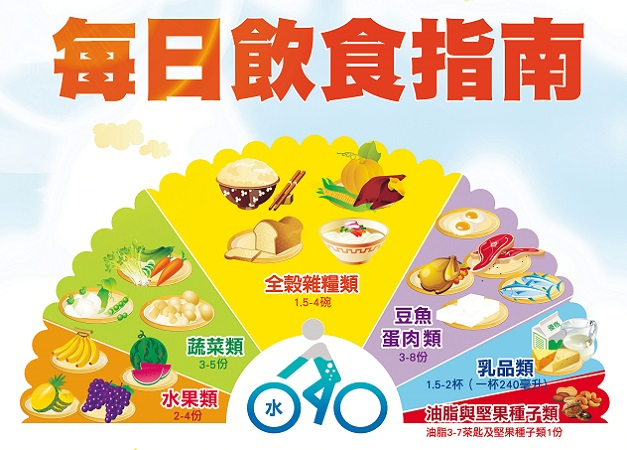
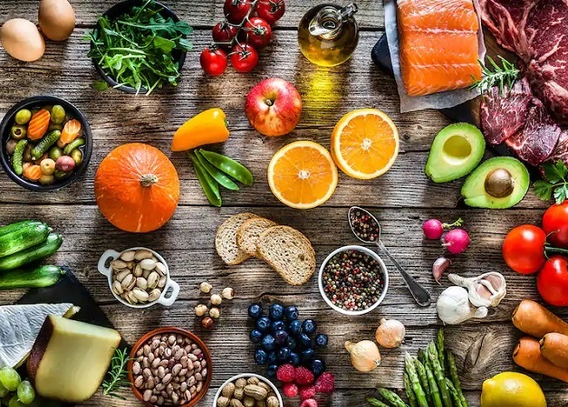
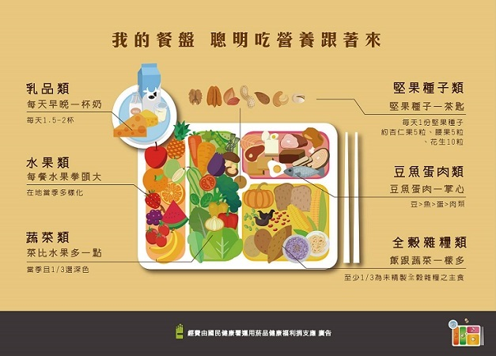
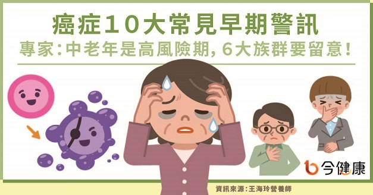
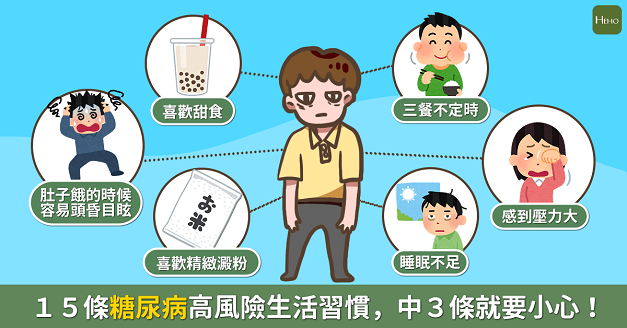
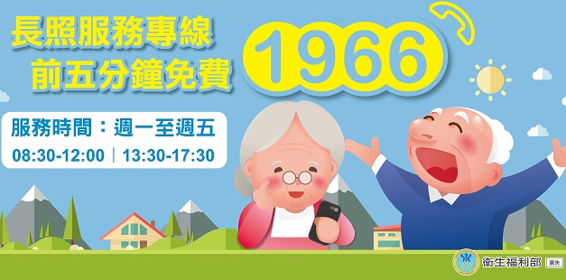

養成健康身體
為使營養均衡，應依「每日飲食指南」的食物分類與建議份量，選擇食物搭配飲食!
了解自己的健康體重和熱量需求，適當飲食，以維持體重在正常範圍內；長期吃入過多熱量，會使體內脂肪囤積，增加各種慢性疾病的危險。
除了飲食之外，維持健康必須每日應有充分之身體活動，維持健康體位，並可藉此增加熱量消耗，達成熱量平衡及良好的體重管理。
繼續閱讀

食物選擇小撇步
以全穀雜糧為主食，除了能獲得較豐富的維生素、礦物質及膳食纖維之外，更能攝取各式各樣的植化素成分，對人體健康具有保護作用。
多蔬食少紅肉，並選擇原態的植物性食物，以充分攝取微量營養素、膳食纖維與植化素。盡量避免攝食以大量白糖、澱粉、油脂等精製原料所加工製成的食品健康飲食習慣的建立，可先由一些小的改變開始做起，以漸進方式達成飲食目標。
購買與製備餐飲，應注意份量、來源標示，盡量避免高熱量密度食物，如油炸與其他高脂高糖的食物。
繼續閱讀

我的餐盤
檢視大多數人的餐盤，隱藏著三高的危機，高鈉、高油、高糖，還有著低纖的隱憂，這讓我們處在營養不均衡、慢性病的威脅中。
為了讓民眾更了解該怎麼落實每日飲食指南，衛福部國健署在2018年設計了臺灣版「我的餐盤」，將每日飲食指南的概念重新繪製成餐盤圖像，並配合口訣，讓民眾更容易理解如何達到健康的飲食，並於日常生活中實踐。
趕緊來瞧一瞧吧！
繼續閱讀

運動好處多
近年來，職場久坐大大降低了身體活動量，進而提昇了罹患慢性疾病的風險，並造成認知功能的降低和心理的不安。
規律運動習慣的養成，對於生理、心理和社會的效益，具有直接而關鍵的影響。研究指出，運動除了能降低心血管疾病發生機率之外，亦可以預防失智症、改善骨質疏鬆。
除此之外，亦能增進心理健康，提升社會表現，最重要的是能維持好體態，讓自己更加有自信！
繼續閱讀

癌症早期警訊
細胞生長過程當中，出現了致癌的因素例如不良的生活習慣、飲食習慣、營養失調、化學物質、輻射影響等，便有可能發生基因突變。
若體內免疫力正常便可使細胞恢復正常；反之若致癌因素較強或免疫不夠便有可能形成癌細胞。身體各處皆有可能發生癌症，不過各器官防禦能力不同、癌細胞侵襲原因也不同，機率也就會有所差別。
癌症生成原因很多，但總歸可歸類成６大項，包括了有家族史者、長期接觸高致癌物者（如石綿、放射性物質）、長期抽菸酗酒者、愛好油物炸物烤物者、長期壓力過大鬱抑者、有癌症或慢性疾病史者等，這些族群對於生活更應多加留意，更要特別注意癌症的早期信號。
早期警訊包含：莫名腫塊、痣變化、異常出血（便）、體重驟減、胸骨後不適、莫名潰瘍、皮膚變化、持續咳嗽、消化不良上腹不適、鼻出血頭痛
繼續閱讀

遠離糖尿病，留意生活習慣
「糖尿病」簡單來說，就是血液中的糖分變多，但糖分沒辦法變成熱量、也沒辦法被身體利用，等於讓整個身體都泡在糖水裡，卻沒辦法獲得糖水的熱量，所以會一直覺得很餓。
而身體之所以會沒辦法使用糖分，有幾個原因：
1.缺乏能幫助身體利用糖分的胰島素
2.製造胰島素的胰島細胞不明原因壞死
3.攝取的糖分、熱量過高
4.過胖
5.有其他的慢性病如高血壓、高血脂或癌症
糖尿病的三大因子：體質、飲食運動等生活習慣、壓力，而這三大原因還可以再細分成15種風險！
繼續閱讀
間歇性斷食好不好？
間歇性斷食是在糖尿病以及減肥、健身領域越來越熱門的關鍵字，像是過去兩年很常被提到的生酮飲食或是得舒飲食一樣，許多患者到門診都會問到間歇性斷食的相關問題，包含間歇性斷食對於身體到底有什麼影響？甚至是間歇性斷食應該如何正確操作？
近期有一篇刊登在新英格蘭醫學雜誌上的文獻回顧提到：
1. 間歇性斷食可能對抗氧化、增加DNA修復、減少胰島素濃度、改善胰島素抗性、改善糖尿病、減重、改善認知功能，甚至是運動表現有所幫助。
2. 間歇性斷食目前常用的方法有每日限時進食法以及5:2斷食法。
3. 健康成人使用間歇性斷食法的風險不高，但若是未成年人，或者是糖尿病、其他慢性病患者，在採用這種飲食法前，最好與自己的主治醫師進行討論，特別是糖尿病患者要注意對血糖造成的影響，避免低血糖風險的出現。
繼續閱讀

長照十年2.0計畫
為了實現在地老化，提供從支持家庭、居家、社區到住宿式照顧之多元連續服務，普及照顧服務體系，建立以社區為基礎的照顧型社區，期能提升具長期照顧需求者與照顧者的生活品質。
長照可以供長期無法自理的病患，各式各樣醫療與非醫療的服務，可以在家裡、社區、護理之家或是長照中心等地點執行。各年齡層都可能有長照的需求，但大多是老年人，也因此長照議題經常和高齡化社會的議題一起討論。
可以簡單分成居家服務、家庭托顧、日間照顧、居家復健、喘息服務，依據輕、中、重度失能程度有不同的補助天數。
繼續閱讀